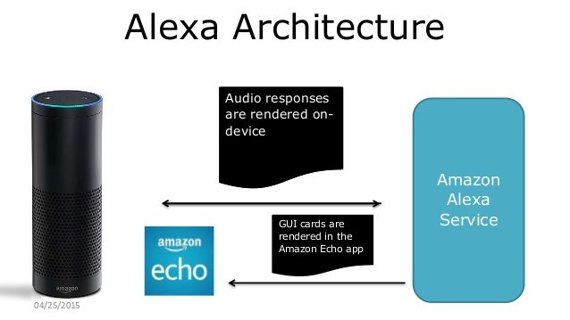

Building Alexa Skills with the Grails® framework
June 26, 2016

Recently I gave a talk at GR8Conf.eu about building applications for the Amazon Alexa platform. I talked about using Groovy with Lambdas to demonstrate Skills (Alexa Apps), as well as using the Grails® framework. I'll give this talk again at GR8Conf.us at the end of July and have even more good stuff to show. On top of that, after working on this for months, I have the material to deliver an Alexa workshop at GR8Conf.us (Thanks to Colin Harrington for helping with the idea). Good Times!
I wanted to write a post as a step-by-step on using a plugin I've recently developed to help you crank out Alexa apps (skills or speechlets). Amazon has a promotion right now: If you submit a new skill to their library, you can win a free t-shirt, so maybe you can make something cool with this and get one! You do not even need an Amazon device; you can point your browser to https://echosim.io to use their emulator.

Let me first get started to explain how these things work and a little about the devices.
Starting a couple years ago, Amazon released a home device/speaker thing called the Echo. It's a household helper device with very nice multi-directional microphones and a nice speaker for playing music.
At first, I didn't get one or understand it; it sounded like a useless toy to me. However peers gobbled them up and started playing around with them. They weren't building apps for it but raved about how cool it was and how it helped them automate their homes and do useful things. Then they started saying they loved it so much they were buying more units and putting them all over their houses. Now my attention was had – of course the first thing that pops into my head was 'how can I get Groovy to work with this thing?'

The first examples they give are all about AWS Lambda functions in Node; however they aren't fantastic on Java because they have a hard limit of 50mb jars you can upload. Surely you can't fit the whole Grails framework and dependencies in there to do much.
Still, we gave it a shot. I followed Benoit Hédiard's presentation on Groovy with Lambdas from GGX 2015. I sat down with a buddy of mine, Lee Fox (he will be at GR8Conf.us), and we hammered out a bunch of ideas we could build with it – in Groovy of course!
The first app we got working was a simple Twitter app that combined Groovy, Spring Social, and Skills to make a skill that would connect to Twitter and search for tweets, as well as give updates to your timeline. You can find the code here.
Good! Now we're getting somewhere. I did a little digging and found they have some servlet support to make a standalone web service – now we can get Grails involved and make this less hideous.
Next we took it a level up. We didn't want the user to have to hard-code their Twitter API keys to run the app, and you can't publish a skill that pulls down someone else's Twitter info. So we built a Grails app that used Spring Security, Oath plugin, and Spring Security UI to allow a UI that lets you register and enter your own Twitter keys for your account. Source for that is here.
After that, it was time to make a plugin to help you make these skills, which I published while I was out at GR8Conf.eu here. It works similar to the Quartz plugin, in that you have a CLI command to create a working template of a Skill to get you started.
I will show you here how to build a skill using the Grails plugin to get you started making your own Skills in a short amount of time.
How Alexa Service Works
The devices themselves, (which are currently the Echo, Tap, Dot, and FireTV) don't do a whole lot. They even publish the source to the devices for you to look at if you choose here.
The magic resides on the Amazon side that handles all the voice recognition and handling of requests. Basically what happens is the user initiates an action (skill) on the device, and it goes to the alexa service to figure out what you want to do. When your app is invoked, it calls back to your app via a JSON HTTPS call and initiates a series of Intents to make your app do things. Your app simply waits for the call and takes appropriate action (via JSON) to do what you want. It's up to you as the developer to make it do something useful.

The picture above gives you an idea of how it works (from Amazon's site). Let's go over Intents and Sample utterances to have a better idea of what's going on.
Intents
Intents are sort of like simplified Intents on android if you have ever done Android coding. They signal an intention for a command to run to do something.
Let's look at an example one to get an idea:
{
"intents": [
{
"intent": "ResponseIntent",
"slots": [
{
"name": "Answer",
"type": "AMAZON.LITERAL"
}
]
},
{
"intent": "QuestionCountIntent",
"slots": [
{
"name": "Count",
"type": "AMAZON.NUMBER"
}
]
},
{
"intent": "AMAZON.HelpIntent"
}
]
}
Here this application can trigger three intents:
- ResponseIntent
- QuestionCountIntent
- HelpIntent
You use JSON to tell it what these are.
You can define 'slots,' which are the expected responses. They comprise a name and Type. There are pre-defined data types you can use to help Amazon parse what is said. Number for example knows the user is going to say a number. Literal is a simple String. Some intents, like the help intent, don't need anything, as they are 'built in' (no inputs).
A little bit about slots:
They are entirely optional. You can do things like define a list of allowed responses (custom slots) that are valid things for the user to say. In this case the ResponseIntent is free form, and we sort out what we want to do by parsing the string we get from Amazon (translated via TTS).
Sample Utterances
Let's look at another example:
ResponseIntent {test|Answer}
ResponseIntent {last player|Answer}
ResponseIntent {test test|Answer}
ResponseIntent {test test test|Answer}
ResponseIntent {test test test test|Answer}
QuestionCountIntent {Count} questions
Here we see the intent each utterances (what the person says) and map it to an intent.
- Amazon will generate common words like conjunctions and ignored things on their end, so you don't have to mess with handling things like 'and', 'the', 'or' etc.
- Variables are surrounded by {}.
- You can use the | operator to specify alternate options.
If you want to say something to your skill, it must match the pattern here. For this case, we want to parse multi-world answers to a question. Basically, here we support one, two, three, or four word responses – anything else will be cut off/ignored.
The last item allows the user to answer how many questions they want to be asked.
Requirements
- A publicly available container (Self running Grails jar, Tomcat, Elastic Beanstalk, etc) to launch your app with HTTPS on port 443 (no way around this). Can be self-signed for DEV mode only.
- If you want to use audio snippets via SSML, they must be hosted as above, but with a recognized CA (no self-signed). S3 Static HTTPS buckets are easiest.
- SSL Certificate common name MUST match hostname (even for self-signed DEV certs)
Let's Make a Grails App Using the Plugin and I Will Explain More as We Go
The plugin is for Grails 3.x only. Let's create a new app first:
grails create-app skillsTest
Now let's open build.gradle and add the plugin into the dependencies {} closure:
compile "org.grails.plugins:alexa-skills:0.1.1"
Now let's create a skill from the command line:
grails create-speechlet SkillsTest
| Rendered template Speechlet.groovy to destination grails-app/speechlets/skillstest/SkillsTestSpeechlet.groovy
Now let's see what it's created in grails-app/speechlets:
@Slf4j
class SkillsTestSpeechlet implements GrailsConfigurationAware, Speechlet {
def grailsApplication
Config grailsConfig
def speechletService
def index() {
speechletService.doSpeechlet(request,response, this)
}
/**
* This is called when the session is started
* Add an initialization setup for the session here
* @param request SessionStartedRequest
* @param session Session
* @throws SpeechletException
*/
public void onSessionStarted(final SessionStartedRequest request, final Session session)
throws SpeechletException {
log.info("onSessionStarted requestId={}, sessionId={}", request.getRequestId(),
session.getSessionId())
}
/**
* This is called when the skill/speechlet is launched on Alexa
* @param request LaunchRequest
* @param session Session
* @return
* @throws SpeechletException
*/
public SpeechletResponse onLaunch(final LaunchRequest request, final Session session)
throws SpeechletException {
log.info("onLaunch requestId={}, sessionId={}", request.getRequestId(),
session.getSessionId())
return getWelcomeResponse()
}
/**
* This is the method fired when an intent is called
*
* @param request IntentRequest intent called from Alexa
* @param session Session
* @return SpeechletResponse tell or ask type
* @throws SpeechletException
*/
public SpeechletResponse onIntent(final IntentRequest request, final Session session)
throws SpeechletException {
log.info("onIntent requestId={}, sessionId={}", request.getRequestId(),
session.getSessionId())
log.debug("invoking intent:${intentName}")
PlainTextOutputSpeech speech = new PlainTextOutputSpeech()
// Create the Simple card content.
SimpleCard card = new SimpleCard(title:"Twitter Search Results")
def speechText = "I will say something"
def cardText = "I will print something"
// Create the plain text output.
speech.setText(speechText)
card.setContent(cardText)
SpeechletResponse.newTellResponse(speech, card)
}
/**
* Grails config is injected here for configuration of your speechlet
* @param co Config
*/
void setConfiguration(Config co) {
this.grailsConfig = co
}
/**
* this is where you do session cleanup
* @param request SessionEndedRequest
* @param session
* @throws SpeechletException
*/
public void onSessionEnded(final SessionEndedRequest request, final Session session)
throws SpeechletException {
log.info("onSessionEnded requestId={}, sessionId={}", request.getRequestId(),
session.getSessionId())
// any cleanup logic goes here
}
SpeechletResponse getWelcomeResponse() {
String speechText = "Say something when the skill starts"
// Create the Simple card content.
SimpleCard card = new SimpleCard(title: "YourWelcomeCardTitle", content: speechText)
// Create the plain text output.
PlainTextOutputSpeech speech = new PlainTextOutputSpeech(text:speechText)
// Create reprompt
Reprompt reprompt = new Reprompt(outputSpeech: speech)
SpeechletResponse.newAskResponse(speech, reprompt, card)
}
/**
* default responder when a help intent is launched on how to use your speechlet
* @return
*/
SpeechletResponse getHelpResponse() {
String speechText = "Say something when the skill need help"
// Create the Simple card content.
SimpleCard card = new SimpleCard(title:"YourHelpCardTitle",
content:speechText)
// Create the plain text output.
PlainTextOutputSpeech speech = new PlainTextOutputSpeech(text:speechText)
// Create reprompt
Reprompt reprompt = new Reprompt(outputSpeech: speech)
SpeechletResponse.newAskResponse(speech, reprompt, card)
}
/**
* if you are using account linking, this is used to send a card with a link to your app to get started
* @param session
* @return
*/
SpeechletResponse createLinkCard(Session session) {
String speechText = "Please use the alexa app to link account."
// Create the Simple card content.
LinkAccountCard card = new LinkAccountCard()
// Create the plain text output.
PlainTextOutputSpeech speech = new PlainTextOutputSpeech(text:speechText)
log.debug("Session ID=${session.sessionId}")
// Create reprompt
Reprompt reprompt = new Reprompt(outputSpeech: speech)
SpeechletResponse.newTellResponse(speech, card)
}
}
Also the plugin will generate a Controller class embedded in your Speechlet file. If you are using Spring Security, you will want to make sure that uri is accessible to the outside to the Alexa service can contact it (there are some requirements I'll fill you in on later):
/**
* this controller handles incoming requests - be sure to white list it with SpringSecurity
* or whatever you are using
*/
@Controller
class SkillsTestController {
def speechletService
def skillsTestSpeechlet
def index() {
speechletService.doSpeechlet(request,response, skillsTestSpeechlet)
}
}
The speechlet artefact will be registered as a Spring bean so it's automatically injected. There is also a service the plugin provides to handle the boring stuff like verifying the request, checking the app ID (more on that later) and the plumbing that calls your skill.
Built-in Events
Looking at the code example above, you can see it made several methods for you. These are part of the skill (speechlet) lifecycle. The first one is:
onSessionStarted
This allows you to store variables for the duration of the session (the interactions as a whole of the app for that time). You can do some setup here and store variables you can use later. This is technically optional for you to implement.
onLaunch
This is called when you invoke the skill. When you say 'Alexa open skillTest' etc. this is you chance to say an opening message about your app, what it does, or what they will need to do.
onIntent
This is the meat and is required to be implemented. When your sample utterances maps to an Intent when the user says something this is invoked.
Here you should generate a card that will appear in the Alexa app on your phone (you can also get to this on your local network via browser by going to 'echo.amazon.com'. Cards are similar to Android cards (more popular in Android Wear) that simply show a message to the user so they can see what is going on.
You can make several kinds of cards which are Simple, Standard, and LinkAccount. Here we have a switch statement to figure out what Intent to process and call the code for the appropriate intent.
onSessionEnded
This is the last one, optional, where you can clean up session resources you might have created like database records for the run.
I've added a few other helper methods to see how to render a help response, link an account, and get some setup details from the Grails config. As a first pass, just try to get the default template working, then start to change things like changing the text, add an Intent, etc.
Set Up Your App on Amazon Developer Portal
This is separate from AWS. I am not aware of any APIs that will create all of this for you so you have to sign up for an account and do this by hand for each skill you want to run.

-
Pull down the 'twitterAuth' app here to get some Intents/Sample utterances to try. They are located in src/main/resources.
-
Sign up for the Amazon developer program here if you haven't already
-
Click on Apps and Services -> Alexa
-
Click on Alexa Skill Kit / Get Started -> Add New Skill

- Pick any name and any invocation name you want to start the app on your Echo / Alexa Device

-
Copy the contents of src/main/resources/IntentSchema.json into Intent Schema.
-
Don't fill in anything for slots
-
Under Sample Utterances, copy the contents of the file src/main/resources/SampleUtterances.txt

-
Under configuration copy the url for /twitterAuth/twitter/index for the endpoint for your server (choose amazon https not ARN). Click next.
-
Leave 'enable account linking' turned off.
-
For domain list, enter a domain that matches your SSL cert the oauth tokens will be valid for. You may use a self-signed cert for development mode, but if you want to publish your skill, your server will need to be running a real recognized certificate (a cheap option is RapidSSL).
-
Enter the url for the privacy policy on your server. It can be any valid web page, a link will show during account linking in the alexa app
-
Hit Save
-
Click on SSL Certificate. If you have a self-signed cert (will only work for DEV mode) paste it here under 'I will upload a self-signed certificate in X.509 format.'
-
Hit Save and go to Test page and hit Save

- Go to Privacy and Compliance, and fill out the info there (It's required)
Now note the application ID it gives you. You will need to add this to the application.groovy/yml file so the application will know the app ID and accept it.
Copy the application ID on the first tab 'SKILL INFORMATION', and paste that into application.groovy
alexaSkills.supportedApplicationIds="amzn1.echo-api.request.8bd8f02f-5b71-4404-a121-1b0385e56123,amzn1.echo-sdk-ams.app.84d004e5-e084-4087-a8c3-a80b12fd2009,amzn1.echo-sdk-ams.app.dc1dea0e-ab91-446d-a1c7-460df5e83489"
alexaSkills.disableVerificationCheck = true // helpful for debugging or replay a command via curl
alexaSkills.serializeRequests = true // this logs the requests to disk to help you debug
alexaSkills.serializeRequestsOutputPath = "/tmp/"
Build and deploy your war file to your server (btw, it must be port 443 HTTPS, no exceptions).
Test Your App
Now try it on your Echo/Alexa device. Say either 'start' or 'open' and the invocation name you gave the app and follow the prompts! You can also use the test function on the portal itself.
Debugging
Debugging can be very frustrating. Make sure to turn your log level to debug. In the Grails config, there is an option called 'serializeRequests' and a output path for them. This allows you to capture the request that came from Amazon. If you are trying to test a fix for a bug, you can replay this via CURL. The files will look like this:
-rw-r--r-- 1 tomcat tomcat 598 Jun 6 22:45 speechlet-1465249551692.out
-rw-r--r-- 1 tomcat tomcat 636 Jun 6 22:45 speechlet-1465249557538.out
-rw-r--r-- 1 tomcat tomcat 598 Jun 6 22:46 speechlet-1465249601675.out
-rw-r--r-- 1 tomcat tomcat 636 Jun 6 22:46 speechlet-1465249607216.out
The built-in security provided by the plugin and underlying library will now allow you to reuse a request because the hashed timestamps are too old (to prevent this type of attack called a 'replay attack'). You can disable this check for dev purposes with the 'disableVerificationCheck' Grails config value. Now you can replay a file via CURL back to your server to avoid the whole voice interaction to test that one case (and test it locally!):
curl -vX POST http://localhost:8080/test/index -d @speechlet-14641464378122470.out --header "Content-Type: application/json"
If you save enough requests of a normal interaction, you could write some functional tests that replay this as part of a test suite or just be able to dev against them locally a bit.
Advanced Stuff: Full UI with Spring Security, OAuth
If you want a UI for the user and use account linking, an easy path is to add Spring Security, Spring Security UI, Spring Security OAuth Grails plugins. You can see an example of how to do this here.
Advanced Stuff: Say Sample Audio Clips in Your Skill
There is a supported markup called SSML which allows up to 90 seconds of low quality mp3 sound clips to play. Their settings/requirements are quick picky to work:
- Must be hosted on a recognized CA HTTPS port 443 server (I use S3 static website for this)
- Must be 16khz, 48 kb/s MP3 files
- Use the open source tool 'ffmpeg' to encode them - these settings work: 'ffmpeg -y -i -ar 16000 -ab 48k -codec:a libmp3lame -ac 1 file.mp3'
- See the heroQuiz app for an example of playback sounds being used.
Example SSML
<speak>
<audio src="\"https://s3.amazonaws.com/vanderfox-sounds/groovybaby1.mp3\"/"> ${speechText}
</audio>
</speak>
Useful links
- Emulator: https://echosim.io
- Account Linking: https://developer.amazon.com/public/solutions/alexa/alexa-skills-kit/docs/linking-an-alexa-user-with-a-user-in-your-system
- Getting Started Guide: https://developer.amazon.com/public/solutions/alexa/alexa-skills-kit/getting-started-guide
- Custom Skill Overview: https://developer.amazon.com/public/solutions/alexa/alexa-skills-kit/overviews/understanding-custom-skills
- Defining the Voice Interface: https://developer.amazon.com/public/solutions/alexa/alexa-skills-kit/docs/defining-the-voice-interface
- Voice Design Handbook: https://developer.amazon.com/public/solutions/alexa/alexa-skills-kit/docs/alexa-skills-kit-voice-design-handbook
- Custom Skill JSON reference: https://developer.amazon.com/public/solutions/alexa/alexa-skills-kit/docs/alexa-skills-kit-interface-reference
- SSML Reference: https://developer.amazon.com/public/solutions/alexa/alexa-skills-kit/docs/speech-synthesis-markup-language-ssml-reference
Conclusion
The Alexa service is a great invention that is catching on. Google and Apple are dipping their toes into the market. I see the Star Trek experience in the home being a reality for everyone in a few years. Already my wife uses it (who swore she never would), and my 4 year old asks it to tell her jokes all the time. I use it to control my lights very often. The sky is the limit, and these tools can be useful in the workplace too. Get out there and build some neat stuff for Alexa with the Grails framework!